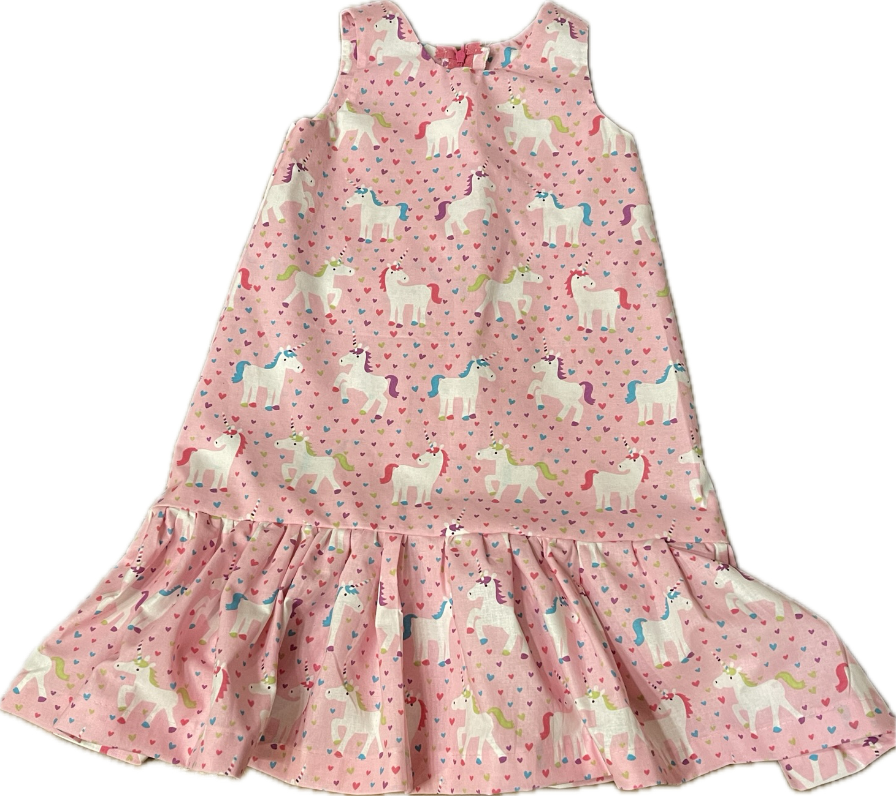
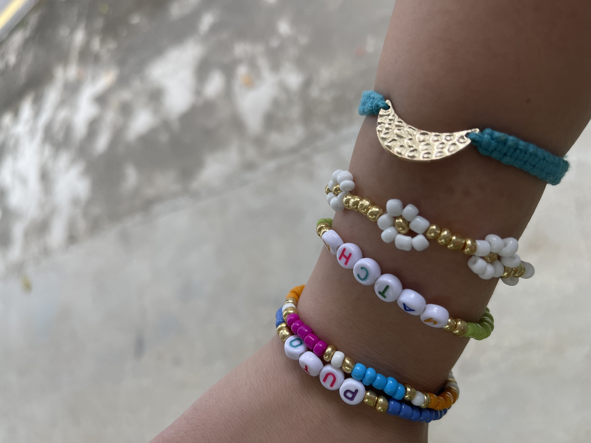
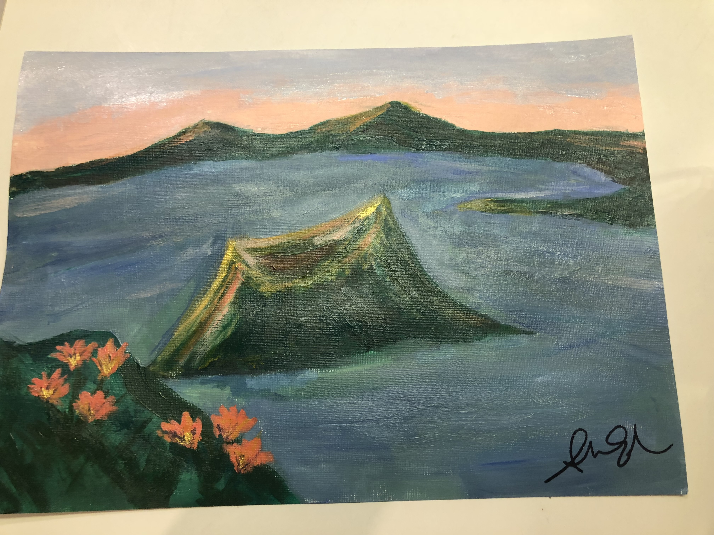
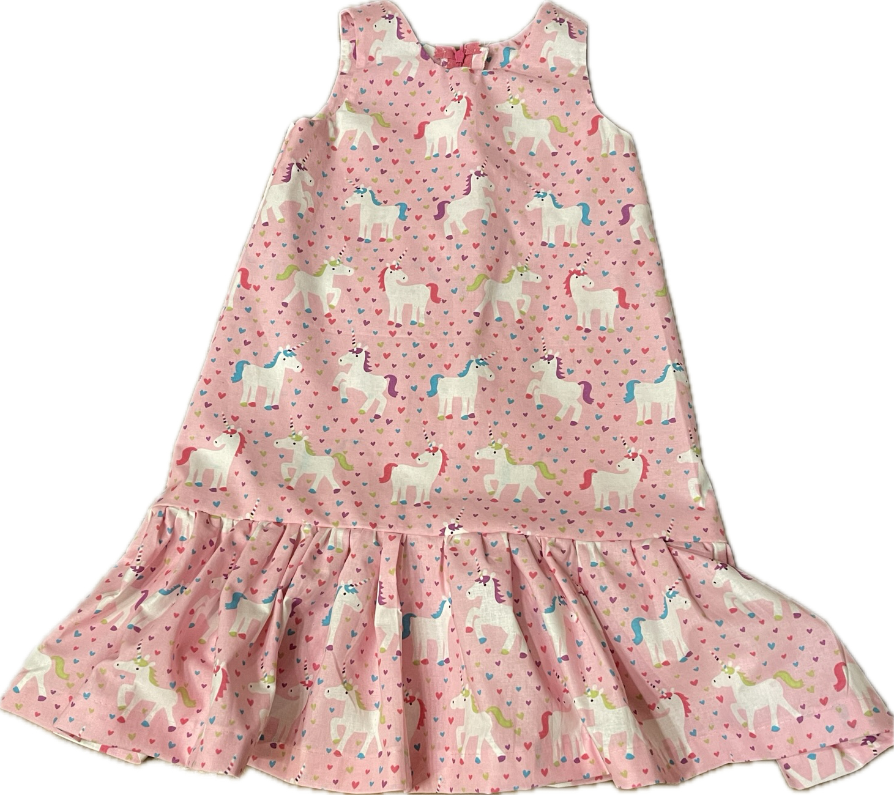
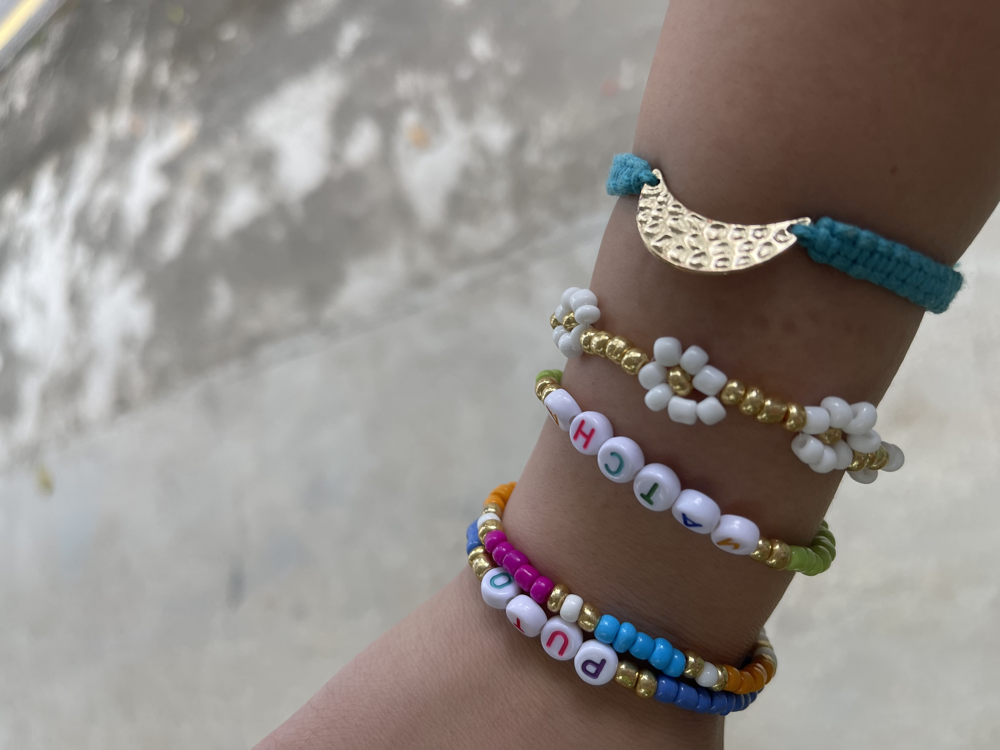
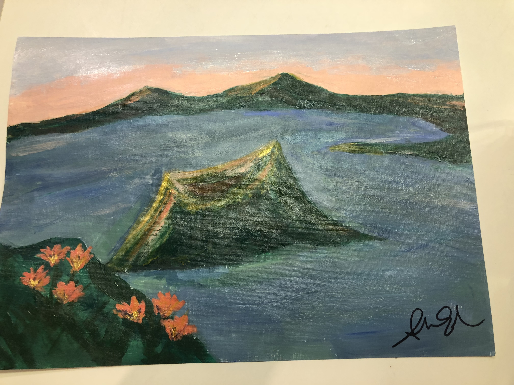

Outside work, I enjoy practicing and teaching Pilates. I first got introduced to Pilates by watching my mom's old-school DVD's, but it wasn't until 2019 when I started practicing reformer Pilates regularly. From not even being able to hold a plank in my first class, after a few weeks I found myself getting stronger and enjoying exercise again. But more importantly, Pilates changed my relationship with my body - I used to just try to make it smaller but through Pilates I learned to really see and feel my body and be grateful for all it could (and could not) do.
In college I started drinking tea to stay focused during studying, hoarding whatever cheap tea bags I could find in the dining hall. But after my dear friend, Katelyn, introduced me to bourgie loose-leaf teas, I was hooked. I became someone who created excel spreadsheets comparing tea from different stores and even went to Taipei to find a direct-to-consumer tea "dealer".
Since then, I've gotten into matcha lattes (also thanks to Katelyn!), and as a lactose-intolerant girly, I'm very big into increasing the distribution points of oat milk around the world (@cafes in Europe, please see this!!!).
RIP to all the crafts I start but don't finish. I love to make things (hence this project)! But I realise I like to buy things to make things more. Even so, see below some of the fun things I've made.
 





I love to eat!!! Some of my favorite foods include:
Any food recommendations for me? Please send them over!